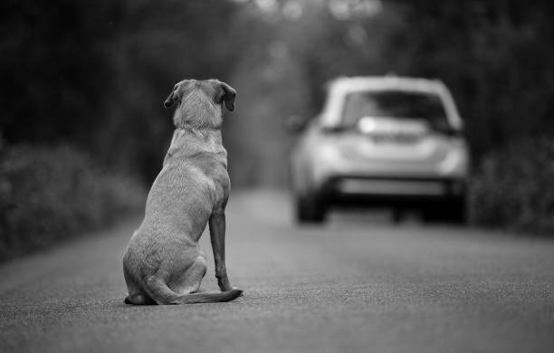
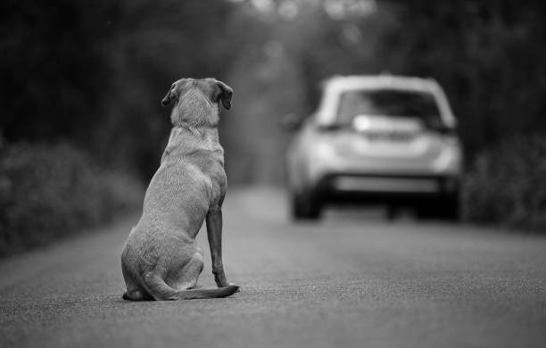
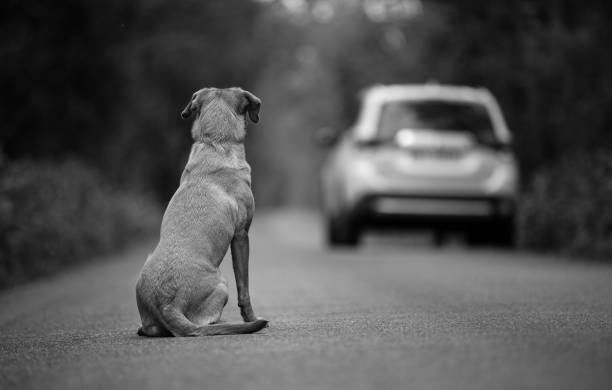

A scenario where cats and dogs breed with little or no chance of finding homes for their offspring.
Pets are often abandoned by owners who can no longer keep their animals or no longer want them.

Pet overpopulation can be due to several factors, such as negligent behavior by caregivers and puppy mills. Hence, being a pet owner comes with a big commitment and being aware that inappropriate puppy and cat breeding practices can lead to overpopulation and the sad outcome of euthanasia.
Dogs and cats rely heavily on humans for shelter and food. Many animals end up in shelters or abandoned by their caretakers either because they are old, sick, or can no longer provide for them. Animal shelters encounter a major challenge as millions of pets are added every year.
ADOPT a pet from the shelter instead of buying it from a breeder or pet store. Puppy mills are brutal, high-volume dog breeding facilities that sell puppies for profit. Adopting a cat or dog is a much more rewarding experience.
SPAY/NEUTER all pets. The process includes surgery to remove the pet's reproductive ability. Spay and neuter to control unwanted offspring. Help animal shelters and cooperate against animal overpopulation.
EDUCATE people who may not be aware of the overpopulation problem. Everyone can create awareness in their community members about pet overpopulation. They may be surprised that adoption is reasonable, affordable, and an excellent way to create strong bonds of friendship with pets.
Each year, approximately 920,000 shelter animals are euthanized because there are more pets than suitable homes for them.
As the name suggests, shelters should be temporary transitional places to protect animals, not kill them. Every change starts with each individual. By signing this petition, you are committing to helping cats and dogs to stop suffering the negative outcomes of overpopulation and the euthanasia of millions of animals.
üñäÔ∏è Giselle from Miami supports this.
üñäÔ∏è Alex from Tampa supports this.
üñäÔ∏è Sergio from Boston supports this.